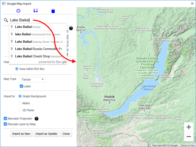
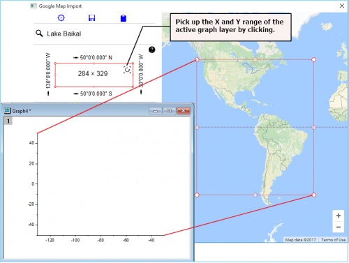
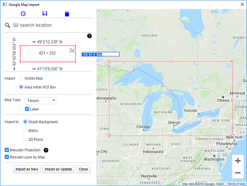
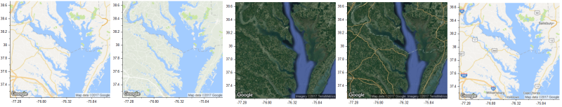
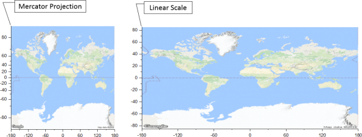
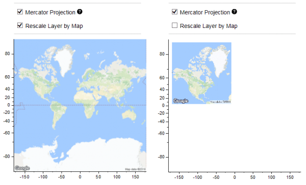

Googleマップインポート
google-map-import
概要
Googleマップインポートアプリは、GoogleマップからOriginにマップ画像をロードするのに役立ちます。
操作方法
- Googleマップインポートアイコンをクリックしてダイアログを開きます。
 | - グラフがアクティブな状態でダイアログが開いた場合、マップはそのグラフのアクティブなレイヤまたは新しいグラフにインポートできます。
- ワークブック等、他のウィンドウがアクティブな状態でダイアログを開くと、マップは新しいグラフにインポートされます。
左上の編集ボックスを使用して場所を検索するか、右側に表示されている地図をズームして目的の場所に移動します。
|
- 左上の編集ボックスを使用して場所を検索するか、右側に表示されている地図をズームして目的の場所に移動できます。

- グラフがアクティブな状態でダイアログを開いた場合、左パネルの赤い四角形の右上にある曲線矢印アイコンをクリックすることで、アクティブなグラフレイヤのXとYの範囲を選択できます。

- インポートされるマップイメージのサイズは、640x640ピクセルに制限されています。
- デフォルトでは、右側のパネルのサイズに応じて、右側に表示されるマップ全体またはディスプレイの中央部分がインポートされます。
- インポート領域をより詳細に制御するには、ROIボックス内の領域ラジオボタンをクリックします。これにより、マップ上に赤い長方形のROIが配置されます。
- これをドラッグしてサイズを変更したり、移動したりすることができます。長方形内に表示されているマップ領域のみがインポートされます。
- ROIボックス内の領域が選択されている場合は、緯度経度値の横にある鉛筆アイコンをクリックして、境界をより正確に設定できます。
- 最大サイズは640*640であることに注意してください。ROIがその境界を超えた場合、中央部分のうち指定サイズ以下の範囲のみがインポートされます。

- 利用可能なマップタイプは、Road Map（道路地図）、Terrain（地形図）、Satellite（衛星画像）、Hybrid（ハイブリッド）の4種類です。ラベルオプションもあり、オン/オフを切り替えできます(Satelliteを除く)。

- Googleマップ画像はメルカトル図法を使用しています。
- メルカトル投影にチェックを付けると、非線形式を使用してOriginのグラフのy軸スケールを設定し、軸スケールがメルカトル投影と一致するようにします。
- レイヤ内に特定の緯度・経度のデータポイントがプロットされている場合、このチェックを付けると、ポイントがマップ上の位置と正確に一致します。
- チェックを外すと、グラフレイヤのY軸スケールは線形になり、軸のスケールが地図上の位置と一致しなくなります。特に、緯度の値が広範囲にわたる場合に影響が大きくなります。

- マップによりレイヤを再スケールにチェックを付けると、X軸とY軸の範囲に比例するようにグラフレイヤのサイズが調整されます。
- チェックを外すと、レイヤのサイズは変更されません。

- ダイアログがグラフから開始された場合は、
- 新規としてインポートボタンをクリックして新しい2D/3Dグラフを作成するか、更新としてインポートをクリックして、マップイメージをアクティブなグラフレイヤにインポートできます。
- その後、地図の仕様を引き続き変更し、更新としてインポート ボタンをクリックすると、現在の地図を新しい地図に置き換えることができます。
- ダイアログがグラフから開始されていない場合は、インポートボタンが表示されます。マップイメージを使用して新しいグラフを作成するには、このボタンをクリックします。グラフが作成されると、新規としてインポートおよび更新としてインポートボタンが使用可能になります。
- 3D平面オプションがチェックされている場合、このアプリはXY平面の下部にマップを含む3Dグラフを作成します。
- 閉じるボタンをクリックするとダイアログを閉じます。